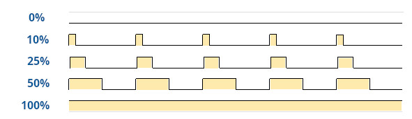
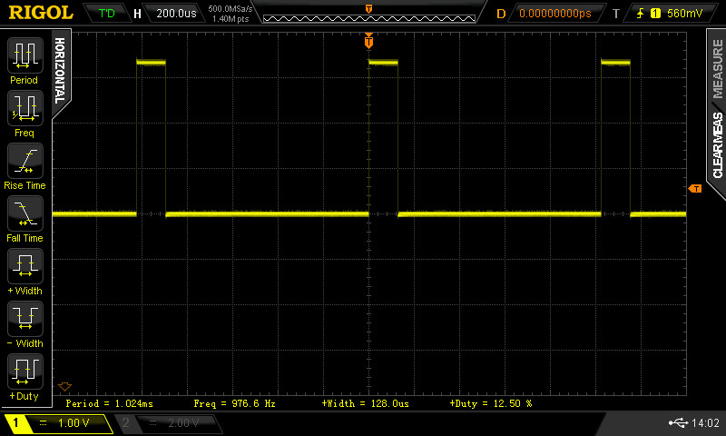
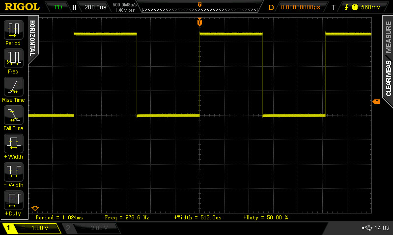

Tutorial: PWM Signal Generation#
PWM Signal#
To implement a PWM (Pulse Width Modulation) signal using FPGA logic, an up-counter is used, and its current count value is compared against a specified threshold. When the count is less than the threshold, the PWM output is set high; otherwise, it is set low. The counter’s bit width determines the PWM duty cycle resolution. For example, an 8-bit counter provides up to 256 discrete duty cycle steps (from 0 to 255).

Figure: PWM signals with different duty cycles, ranging from 0% to 100%.
VHDL Implementation#
To implement a PWM signal using FPGA logic, an up-counter is used, and its current count value is compared against a specified threshold. When the count is less than the threshold, the PWM output is set high; otherwise, it is set low.
The following is a VHDL model of a PWM signal generator.
The duty cycle is updated once per PWM period based on the DC input.
The duty cycle value (DC) is sampled and loaded into
an internal register (dc_reg) at the start of each new PWM period.
This VHDL entity defines three generics:
CLK_HZ: The frequency of the clock input (in Hz)CLK_DIV: The clock division factor used to scale down the counter clockDC_WIDTH: The bit width (resolution) of the PWM signal
For example, if the clock input is 50MHz, the clock divider is 50,
and the PWM resolution is 10 bits, the PWM frequency can be calculated as:
-- File: pwm_gen.vhd
LIBRARY IEEE;
USE IEEE.STD_LOGIC_1164.ALL;
USE IEEE.NUMERIC_STD.ALL;
ENTITY pwm_gen IS
GENERIC (
CLK_HZ : INTEGER := 50000000; -- 50MHz input clock
CLK_DIV : INTEGER := 50; -- Clock divider (set for PWM freq.)
DC_WIDTH : INTEGER := 10 -- Duty cycle resolution
);
PORT (
CLK : IN STD_LOGIC; -- Clock input
RST_N : IN STD_LOGIC; -- Asynch. active-low reset
DC : IN STD_LOGIC_VECTOR(DC_WIDTH - 1 DOWNTO 0); -- Duty cycle (0–255)
OE : IN STD_LOGIC := '1'; -- Output enable
PWM : OUT STD_LOGIC -- PWM output
);
END pwm_gen;
ARCHITECTURE behavioral OF pwm_gen IS
CONSTANT PWM_STEPS : INTEGER := 2 ** DC_WIDTH;
SIGNAL clk_div_cnt : INTEGER RANGE 0 TO CLK_DIV - 1 := 0;
SIGNAL clk_tick : STD_LOGIC := '0';
SIGNAL pwm_step_cnt : unsigned(DC_WIDTH - 1 DOWNTO 0) := (OTHERS => '0');
SIGNAL dc_reg : unsigned(DC_WIDTH - 1 DOWNTO 0) := (OTHERS => '0');
SIGNAL pwm_out : STD_LOGIC := '0';
BEGIN
clk_div_proc : PROCESS (CLK, RST_N)
BEGIN
IF RST_N = '0' THEN
clk_div_cnt <= 0;
clk_tick <= '0';
ELSIF rising_edge(CLK) THEN
IF clk_div_cnt = CLK_DIV - 1 THEN
clk_div_cnt <= 0;
clk_tick <= '1';
ELSE
clk_div_cnt <= clk_div_cnt + 1;
clk_tick <= '0';
END IF;
END IF;
END PROCESS;
pwm_counter_proc : PROCESS (CLK, RST_N)
BEGIN
IF RST_N = '0' THEN
pwm_step_cnt <= (OTHERS => '0');
dc_reg <= (OTHERS => '0');
ELSIF rising_edge(CLK) THEN
IF clk_tick = '1' THEN
IF pwm_step_cnt = PWM_STEPS - 1 THEN
pwm_step_cnt <= (OTHERS => '0');
dc_reg <= unsigned(DC); -- load DC at start of PWM period
ELSE
pwm_step_cnt <= pwm_step_cnt + 1;
END IF;
END IF;
END IF;
END PROCESS;
pwm_output_proc : PROCESS (CLK, RST_N)
BEGIN
IF RST_N = '0' THEN
pwm_out <= '0';
ELSIF rising_edge(CLK) THEN
IF dc_reg = to_unsigned(PWM_STEPS - 1, DC_WIDTH) THEN
pwm_out <= '1'; -- 100% duty cycle
ELSIF dc_reg = to_unsigned(0, DC_WIDTH) THEN
pwm_out <= '0'; -- 0% duty cycle
ELSIF pwm_step_cnt < dc_reg THEN
pwm_out <= '1';
ELSE
pwm_out <= '0';
END IF;
END IF;
END PROCESS;
-- Output assignment
PWM <= pwm_out WHEN OE = '1' ELSE '0';
END behavioral;
VHDL Testbench#
A VHDL testbench is also provided below.
-- File: tb_pwm_gen.vhd
LIBRARY IEEE;
USE IEEE.STD_LOGIC_1164.ALL;
USE IEEE.NUMERIC_STD.ALL;
ENTITY tb_pwm_gen IS
END tb_pwm_gen;
ARCHITECTURE sim OF tb_pwm_gen IS
-- Constants for simulation
CONSTANT CLK_HZ : INTEGER := 50000000;
CONSTANT CLK_PERIOD : TIME := 20 ns; -- 50 MHz clock
CONSTANT CLK_DIV : INTEGER := 10;
CONSTANT DC_WIDTH : INTEGER := 8;
SIGNAL value : INTEGER := 0;
-- DUT Signals
SIGNAL t_CLK : STD_LOGIC := '0';
SIGNAL t_RST_N : STD_LOGIC := '0';
SIGNAL t_DC : STD_LOGIC_VECTOR(DC_WIDTH - 1 DOWNTO 0) := (OTHERS => '0');
SIGNAL t_OE : STD_LOGIC := '1';
SIGNAL t_PWM : STD_LOGIC;
-- Component Declaration
COMPONENT pwm_gen
GENERIC (
CLK_HZ : INTEGER := 50000000;
CLK_DIV : INTEGER := 100;
DC_WIDTH : INTEGER := 8
);
PORT (
CLK : IN STD_LOGIC;
RST_N : IN STD_LOGIC;
DC : IN STD_LOGIC_VECTOR(DC_WIDTH - 1 DOWNTO 0);
OE : IN STD_LOGIC := '1';
PWM : OUT STD_LOGIC
);
END COMPONENT;
BEGIN
-- Instantiate the Unit Under Test (UUT)
uut : pwm_gen
GENERIC MAP(
CLK_HZ => CLK_HZ,
CLK_DIV => CLK_DIV,
DC_WIDTH => DC_WIDTH
)
PORT MAP(
CLK => t_CLK,
RST_N => t_RST_N,
DC => t_DC,
OE => t_OE,
PWM => t_PWM
);
-- Clock generation
clk_process : PROCESS
BEGIN
t_CLK <= '0';
WAIT FOR CLK_PERIOD / 2;
t_CLK <= '1';
WAIT FOR CLK_PERIOD / 2;
END PROCESS;
-- Stimulus process
stim_proc : PROCESS
BEGIN
t_RST_N <= '0';
t_OE <= '0';
value <= 0;
WAIT FOR 100 ns;
t_RST_N <= '1';
WAIT FOR 200 ns;
t_OE <= '1';
value <= 15;
WAIT FOR 200 us;
value <= 63;
WAIT FOR 0.2 ms;
WAIT UNTIL t_PWM = '0';
t_OE <= '0';
WAIT FOR 0.2 ms;
t_OE <= '1';
value <= 127;
WAIT FOR 0.2 ms;
value <= 191;
WAIT FOR 0.5 ms;
value <= 255;
WAIT;
END PROCESS;
t_DC <= STD_LOGIC_VECTOR( to_unsigned(value, DC_WIDTH) );
END sim;
-- ghdl -a pwm_gen.vhd tb_pwm_gen.vhd && ghdl -e tb_pwm_gen
-- ghdl -r tb_pwm_gen --vcd=waveform.vcd --stop-time=2s
-- gtkwave waveform.vcd &
When simulating the design using a VHDL testbench, the GHDL simulator produced the following waveforms:

Figure: Simulation waveforms generated by GHDL for the PWM signal.
FPGA Implementation#
The following Tcl script is used to specify the FPGA pin assignments (for the MAX10 Lite FPGA board).
#============================================================
# FPGA assignments
#============================================================
#set_global_assignment -name FAMILY "MAX 10 FPGA"
#set_global_assignment -name DEVICE 10M50DAF484C7G
#============================================================
# CLOCK
#============================================================
set_instance_assignment -name IO_STANDARD "3.3-V LVTTL" -to CLK
set_location_assignment PIN_P11 -to CLK
#============================================================
# Slide Switches
#============================================================
set_instance_assignment -name IO_STANDARD "3.3-V LVTTL" -to DC[0]
set_instance_assignment -name IO_STANDARD "3.3-V LVTTL" -to DC[1]
set_instance_assignment -name IO_STANDARD "3.3-V LVTTL" -to DC[2]
set_instance_assignment -name IO_STANDARD "3.3-V LVTTL" -to DC[3]
set_instance_assignment -name IO_STANDARD "3.3-V LVTTL" -to DC[4]
set_instance_assignment -name IO_STANDARD "3.3-V LVTTL" -to DC[5]
set_instance_assignment -name IO_STANDARD "3.3-V LVTTL" -to DC[6]
set_instance_assignment -name IO_STANDARD "3.3-V LVTTL" -to DC[7]
set_instance_assignment -name IO_STANDARD "3.3-V LVTTL" -to DC[8]
set_instance_assignment -name IO_STANDARD "3.3-V LVTTL" -to DC[9]
set_location_assignment PIN_C10 -to DC[0]
set_location_assignment PIN_C11 -to DC[1]
set_location_assignment PIN_D12 -to DC[2]
set_location_assignment PIN_C12 -to DC[3]
set_location_assignment PIN_A12 -to DC[4]
set_location_assignment PIN_B12 -to DC[5]
set_location_assignment PIN_A13 -to DC[6]
set_location_assignment PIN_A14 -to DC[7]
set_location_assignment PIN_B14 -to DC[8]
set_location_assignment PIN_F15 -to DC[9]
#============================================================
# PUSH BUTTONS
#============================================================
set_instance_assignment -name IO_STANDARD "3.3 V SCHMITT TRIGGER" -to RST_N
set_instance_assignment -name IO_STANDARD "3.3 V SCHMITT TRIGGER" -to OE
set_location_assignment PIN_B8 -to RST_N
set_location_assignment PIN_A7 -to OE
set_instance_assignment -name IO_STANDARD "3.3-V LVTTL" -to PWM
set_location_assignment PIN_AB20 -to PWM


Figure: PWM output signals measured by a digital oscilloscope
Coding Exercise#
- Generate 3 PWM signals (frequency approx. 500Hz) to drive 3 control pins of the RGB LED.
- Use 3 slide switches per color to set the duty cycle of the corresponding PWM signal.
This work is licensed under a Creative Commons Attribution-ShareAlike 4.0 International License.
Created: 2025-06-15 | Last Updated: 2025-06-15